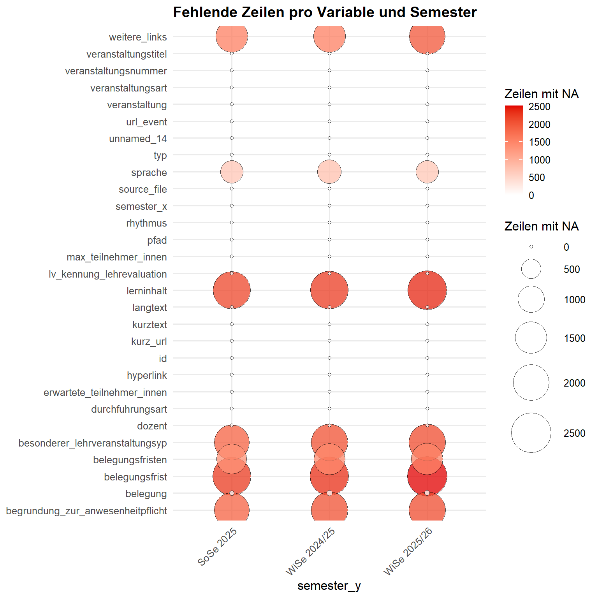

Hintergrund
HEXCleanR bündelt zentrale Arbeitsschritte für die Aufbereitung der HEX-Daten. Das Paket unterstützt beim Laden und Vereinheitlichen von Scraping-Daten, bei der Bereinigung von Text- und Missing-Werten, bei explorativen Qualitätschecks sowie bei der Validierung zentraler Variablen. Darüber hinaus enthält es Funktionen zur Ergänzung fehlender Sprachinformationen und zur Einbindung bereits vorhandener oder neuer Future-Skills-Klassifikationen.
Im folgenden soll eine kurzer Einstieg in die zentralen Funktionen von HEXCleanR gegeben werden. Es wird exemplarisch mit den Daten der Universität Koblenz gearbeitet, die im Rahmen des Scraping-Projekts bereits aufbereitet wurden.
Pakete laden
In einem ersten Schritt updaten wir HEXCleanR. Anschließend laden wir das Paket sowie weitere, für das Cleaning benötigten Pakete.
Daten importieren
Wir definieren den Pfad zum Ordner der Universität Koblenz und laden die Daten mit der Funktion load_data_from_sp(). Anschließend bereinigen wir die Daten, indem wir Spalten entfernen, die nur NA-Werte enthalten (drop_full_na_columns()), und auf alle Stringvariablen überflüssige Leerzeichen entfernen (squish_character_columns()).
UNIVERSITY_FOLDER <- "Universitaet_Koblenz"
BASE_PATH <- "C:/SV/HEX/Scraping/data/single_universities"
raw_data <- HEXCleanR::load_data_from_sp(university_folder = UNIVERSITY_FOLDER) |>
HEXCleanR::drop_full_na_columns() |>
HEXCleanR::squish_character_columns()Daten explorieren
Wir checken auf Anzahl der Zeilen pro Semester (check_semester_n()), um etwaige Scrapingfehler oder anderweitige Unstimmigkeiten früh ausfindig zu machen.
raw_data |>
HEXCleanR::check_semester_n() # A tibble: 3 × 2
source_file n
<chr> <int>
1 course_data_WiSe_2025-26.json 2530
2 course_data_WiSe_2024-25.json 2395
3 course_data_SoSe_2025.json 2290Mit plot_na_balloons() visualisieren wir die Verteilung der NAs der Variablen über die Semester hinweg.
raw_data |>
HEXCleanR::plot_na_balloons(grp_var = semester_y, print_table = FALSE) 
Okay, wir sehen keine dramatischen Auffälligkeiten: Die Fallzahlen pro Semester sind relativ stabil, und es gibt keine Variablen, die über die Semester hinweg stark mit Blick auf die Anzahl der NAs schwanken. Wir gehen ins eigentliche Cleaning über.
Daten bereinigen
Im folgenden werden exemplarisch jene Variablen bereinigt, für die HEXCleanR spezifische Helper-Funktionen bereitstellt.
organisation
Wir erzeugen aus einrichtung die Variable organisation_orig, indem wir die Listen in einrichtung in Zeichenketten umwandeln. Anschließend erstellen wir eine Kopie von organisation_orig und nennen sie organisation.
Mit der Funktion check_organisation() überprüfen wir die Werte in der Spalte organisation auf Probleme.
raw_data <- raw_data %>%
mutate(organisation_orig = map_chr(einrichtung, ~ paste(unlist(.x), collapse = " ; "))) |>
mutate(organisation = organisation_orig)
orga_check <- raw_data |>
select(!is.list) |>
check_organisation()
orga_check |>
get_agent_report(display_table = FALSE) |>
knitr::kable()| i | type | columns | values | precon | active | eval | units | n_pass | f_pass | W | S | N | extract |
|---|---|---|---|---|---|---|---|---|---|---|---|---|---|
| 1 | col_vals_regex | organisation | ^(?:[^;](?:;))[^;]*$ | NA | TRUE | OK | 7215 | 7215 | 1.00000 | NA | FALSE | NA | NA |
| 2 | col_vals_regex | organisation | 1*$ | NA | TRUE | OK | 7215 | 7215 | 1.00000 | NA | FALSE | NA | NA |
| 3 | col_vals_regex | organisation | 2*$ | NA | TRUE | OK | 7215 | 7215 | 1.00000 | NA | FALSE | NA | NA |
| 4 | col_vals_between | .nchar_org | 0, 1000 | 1 | TRUE | OK | 7215 | 7215 | 1.00000 | FALSE | NA | NA | NA |
| 5 | col_vals_expr | .squished, organisation | ==, organisation, .squished | 1 | TRUE | OK | 7215 | 7215 | 1.00000 | NA | FALSE | NA | NA |
| 6 | col_vals_expr | organisation | !, stringr::str_detect(organisation, stringr::regex(“(?<!\p{L})(Bachelor|Master|Diplom|B\.A|M\.A|Deutsch|Englisch|Französisch|Spanisch|Italienisch|Russisch|T(?:ü|ue)rkisch|Portugiesisch|Niederl(?:ä|ae)ndisch)(?!\p{L})”, ignore_case = TRUE)) | NA | TRUE | OK | 7215 | 7180 | 0.99515 | TRUE | NA | NA | 35 |
Die Tabelle zeigt die Ergebnisse der Validierung der Spalte organisation. Jede Zeile entspricht einem Validierungsschritt, und die Spalten geben folgende Informationen:
-
i: Schritt-Nummer: Die fortlaufende Indexnummer des Validierungsschritts (hilft bei der Zuordnung zu get_data_extracts). -
type: Validierungs-Funktion: Die angewendete pointblank-Funktion (z. B. col_vals_regex oder col_vals_expr). -
columns: Zielspalte: Der Name der Spalte im Datensatz, auf die sich die Prüfung bezieht. -
values: Prüfwerte: Die Kriterien der Prüfung (z. B. ein regulärer Ausdruck oder ein Wertebereich). -
precon: Precondition: Zeigt an, ob vorab ein Filter auf die Daten angewendet wurde. -
active: Aktiv-Status: Ein logischer Wert (TRUE/FALSE), der angibt, ob dieser Schritt ausgeführt wurde. -
eval: Evaluation: Gibt an, ob der Check technisch ohne Fehler (“EVAL PASS”) durchgelaufen ist. -
units: Gesamtzeilen: Die Anzahl der untersuchten Zeilen (Samples) für diesen spezifischen Schritt. -
n_pass: Bestanden (Absolut): Die exakte Anzahl der Zeilen, die das Kriterium erfüllt haben. -
f_pass: Bestanden (Quote): Der Anteil der korrekten Zeilen als Dezimalzahl (z. B. 0.99 für 99 %). -
W,S,N: Schwellenwerte: Die definierten Grenzen für Warnungen (W), Stops (S) oder Notifications (N). -
extract: Extrakt-ID: Eine interne Kennung, die signalisiert, dass Fehlerdaten für diesen Schritt gespeichert wurden.
Konkret zeigt die Tabelle oben, zeigt die Ergebnisse der Validierung der Spalte organisation. Jede Zeile steht für einen einzelnen Prüfschritt, etwa für die Kontrolle des Trennzeichens, unerlaubter Sonderzeichen, der Textlänge oder auffälliger Begriffe wie Bachelor oder Master. Die Spalte i ist dabei einfach die laufende Nummer des Schritts und hilft später bei der Zuordnung zu get_data_extracts(). type zeigt, welche pointblank-Prüffunktion verwendet wurde, also zum Beispiel ein Regex-Check oder ein Ausdruck, und columns benennt die Spalte, auf die sich der jeweilige Test bezieht. In values steht das konkrete Prüfkriterium, also etwa ein regulärer Ausdruck oder ein erlaubter Wertebereich.
Die übrigen Spalten beschreiben, wie der Check technisch gelaufen ist und wie viele Fälle bestanden haben. precon zeigt an, ob vor der Prüfung noch eine vorbereitende Transformation oder Bedingung angewendet wurde; das ist hier etwa bei Hilfsspalten für Zeichenlänge oder bereinigte Leerzeichen relevant. active sagt, ob der Schritt tatsächlich ausgeführt wurde, und eval, ob er technisch sauber durchlief. units gibt an, wie viele Zeilen in diesem Schritt geprüft wurden, n_pass wie viele davon das Kriterium erfüllt haben, und f_pass den entsprechenden Anteil. Die Spalten W, S und N enthalten die Schwellenwerte dafür, ab wann ein Schritt als Warning, Stop oder Notification behandelt wird. extract ist schließlich eine interne Kennung, über die sich auffällige Fälle für den jeweiligen Prüfschritt gezielt extrahieren lassen.
Tatsächlich gibt nun step 6 ein Warning, dass non-orga-Patterns geflaggt wurden. Wir checken die entsprechenden Einträge.
orga_check |>
get_data_extracts(i = 6) |>
select(organisation_orig) |>
distinct()# A tibble: 1 × 1
organisation_orig
<chr>
1 Lehreinheit FBG Englisch